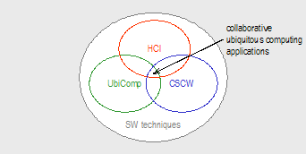
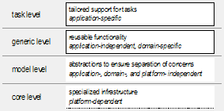
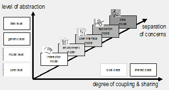

The BEACH Application Model and Software Framework for Synchronous Collaboration in Ubiquitous Computing Environments
Peter Tandler
FhG – Fraunhofer Gesellschaft
e.V.
IPSI – Integrated Publication and Information Systems
Institute
AMBIENTE – Workspaces of the
Future
http://ipsi.fraunhofer.de/ambiente/
The devices available in ubiquitous computing environments offer new possibilities for interaction. In the context of meetings and teamwork situations, it is desirable to take advantage of their properties for synchronous collaboration. Besides offering an adapted user interface, this requires that the software infrastructure is designed for synchronous access to shared information objects using heterogeneous devices with different interaction characteristics. As this field is still emerging and no mature standards are at hand, it is necessary to provide guidance for UbiComp developers how to model their applications to ensure both extensibility for future developments and reusability in new contexts.
In this paper, a conceptual model for synchronous applications in ubiquitous computing environments is proposed. To test its applicability, it was used to structure the architecture of the BEACH software framework that is the basis for the software infrastructure of i-LAND (the ubiquitous computing environment at FhG-IPSI). The BEACH framework provides the functionality for synchronous cooperation and interaction with roomware components, i.e. room elements with integrated information technology. To show how the BEACH model and framework can be applied, the design of a sample application is explained. Also, the BEACH model is positioned against related work. In conclusion, we provide our experiences with the current implementation.
Synchronous collaboration, heterogeneous devices, software architecture, conceptual model, BEACH application model and framework, i-LAND, roomware components
Ubiquitous computing environments offer a wide range of devices coming in many different sizes and shapes [[UbiComp-Issues]]. Being often occupied by multiple users simultaneously, ubiquitous computing environments must support synchronous work with information that is shared among all present devices. Due to the heterogeneous nature of ubiquitous computing devices, their software infrastructure must enable user interfaces taking advantage of their different properties. In addition, it must enable tight collaboration of users working with different devices or sharing the same device.
Current operation systems provide no support for handling this heterogeneity. Synchronous collaboration can be handled by several computer-supported cooperative work frameworks, groupware systems, or middleware infrastructures, but these systems have no support for heterogeneous devices. There are research prototypes aimed at managing devices with different interaction capabilities, but these projects mainly deal with interfaces for and discovery of simple services and lack support for tight collaboration. There is a need for a software infrastructure designed for handling heterogeneous environments, providing adequate interaction styles and user interface concepts, as well as offering capabilities for synchronous collaboration. As this kind of infrastructure is built on top of current operating systems, which handle the interaction with the specific hardware, it can be referred to as “meta-operating system” [[Gaia-GaiaOS]].
Over the last five years, we have been working at IPSI, the Fraunhofer Integrated Publication and Information Systems Institute in Darmstadt (Germany), in the context of the i-LAND project on support for synchronous collaboration with roomware components [[Roomware-Matters], [Roomware-i-LAND], [Roomware-NextGeneration], [Roomware-SecondGeneration]]. “Roomware” is a term we coined to refer to room elements with integrated information technology such as interactive tables, walls, or chairs.
The work presented here was originally triggered by the need to create a software infrastructure for this roomware environment. This led to the development of a software prototype called “BEACH”, the Basic Environment for Active Collaboration with Hypermedia. BEACH provides the software infrastructure for environments supporting synchronous collaboration with many different devices. It offers a user interface that also fits to the needs of devices that have no mouse or keyboard, and which require new forms of human-computer and team-computer interaction. To allow synchronous collaboration BEACH builds on shared documents accessible via multiple interaction devices concurrently.
During the development, BEACH was restructured and refactored [[Refactory-Smalltalk], [Jacobsen-SoftwareModelling]] several times. It became obvious that a conceptual model was needed to guide developers of ubiquitous computing applications. This led us to the work presented here. Parts of BEACH emerged into a software framework with an architecture that is structured according to the conceptual model for synchronous ubiquitous computing applications proposed in this paper. The model aims at offering both flexibility and extensibility for different devices that are part of ubiquitous computing environments.
Due to the nature of collaborative ubiquitous computing environments, the results of several related research areas have to be combined to gain an integrated application model that covers all aspects of interaction and collaboration (fig. 1-1.1):1
Human-Computer Interaction (HCI) deals with user interfaces and interaction techniques.
Ubiquitous computing (UbiComp) explores dynamic environments with heterogeneous devices.
Computer-Supported Cooperative Work (CSCW) offers techniques to handle synchronous interaction with distributed computers.
Software development techniques are needed to ensure extensibility and reusability.

Figure 1 1.1. Conttibuting research areas for the design of collaborative ubiquitous computing applications.
A successful model for collaborative ubiquitous computing applications must combine the results of all involved research areas.
In the following section, requirements for the software infrastructure of a ubiquitous computing environment to support synchronous collaboration are discussed. A sample application, the Passage system, is introduced, which is used in the following to illustrate the application of the BEACH model and framework. Based on the identified requirements, the proposed conceptual application model has been designed, which is presented next. The succeeding section presents the architecture of the BEACH software framework, which has been developed according to the structure suggested by the conceptual model. The software design of the Passage system is explained as a sample application of the BEACH model and framework. To position the BEACH model against other approaches, the next section compares the proposed model with related work. The paper closes with a discussion of the conceptual model and ideas for future work.
[# …. Bla bla bla … some stuff removed … #]
A conceptual model defines the very high-level structure of an application [[Groupware-Architectures], [PAC-UI-Architecture]]. By using this structure for applications, basic components are identified that have a clear separation of concerns, thus supporting their independence and increasing their flexibility and adaptability. According to the definition by [ :inline | [Nowack-Structures+Interactions]] a “conceptual model describes a conceptual understanding of something, and it is based on concept formation in terms of classification, generalization and aggregation. Hence, conceptual modeling implies abstraction”. Abstraction is a key technique to overcome software complexity by allowing the developer to focus on one specific aspect at a time. By using this structure for applications, basic components are identified that have a clear separation of concerns, thus supporting their independence and increasing their flexibility and adaptability [[BuildAppFWs-Viewpoints]].
In this section, a conceptual model for ubiquitous computing applications is presented. Organized by three major design dimensions, which are identified first, its properties are discussed.
In order to identify the design dimensions for a conceptual model, results of all contributing research areas (identified in section 1.1) have to be considered. Looking at these four areas, contributions for a conceptual model can be identified (fig. 4-2.1):
Human-Computer Interaction (HCI) is concerned with user interface & interaction.
CSCW has identified different degrees of coupling and different mechanisms for sharing.
Ubiquitous computing (UbiComp) has to deal with device heterogeneity and their relation to the environment in which they are used.
And, finally, separating specific concerns and defining levels of abstraction are very important software modeling techniques.
Figure 4 2.1. Contributions to roomware applications by the different research areas. Figure 1-1.1 is extended to show the contributions of every involved research area.
These contributions can be arranged as three design dimensions: separation of concerns, coupling and sharing, and level of abstraction. While the contributions “degree of coupling” and “level of abstraction” define a dimension on their own, “user interface & interaction” and “devices & environment” represent different concerns of UbiComp software systems that should be separated to simplify building abstractions and models [[Jacobsen-SoftwareModelling], [BuildAppFWs-Viewpoints]]. Hence, they can be combined to a single dimension. Separation of concerns and levels of abstraction are two independent properties of a system structure [[Parnas-DecomposingSystems]]. This allows seeing them as independent dimensions.
These three design dimensions – separation of concerns, coupling and sharing, and level of abstraction – constitute the basic dimensions of the conceptual model proposed in this paper. Each of these dimensions will be discussed in the following.
The model presented here is an updated version of the model published in [[BEACH-SyncCollaboration]], adding the third dimension for coupling and sharing. In addition, a graphical notation to visualize the model in design diagrams is proposed.
As described above, it is necessary for different devices to have different user interface elements (req. ). Also, different tools are useful depending on the device(s) at hand (req. ). In order to achieve the flexibility needed for different devices, it is important to clearly separate different responsibilities within the software. Therefore, models for the data, application, user interface, interaction, and environment are distinguished (fig. 4-2.2). The term “model” here refers to a part of an application handling a specific concern [[Jacobsen-SoftwareModelling]].

Figure 4 2.2. Dependencies between data, application, user-interface, environment, and interaction model
The data model specifies the kind of data the users can create and interact with. To work with data, a application provides the necessary functionality. These two models are independent of the currently used or supported hardware device. Instead, available devices and other relevant parts of the environment are described by the environment model. The user-interface model defines the framework for how the applications can be presented to the user, taking into account the properties of the environment model. These models are not applicable for ubiquitous computing applications only. Yet, due to the heterogeneous environment in which they operate, they have a strong need for a clear structure that gives the flexibility to adapt different components independently for different situations.
In the following, these five models are presented in more detail, including their relationship to the previously identified requirements. Concrete examples of how these models have been applied are given afterwards.
It is a very common approach in application modeling to separate the application model from the data or domain model [[VisualWorks-UsersGuide], [HUMANOID-Model]]. The data model relates to the information dimension identified by [ :inline | [Jacobson-OOSE]], while the application model represents the behavior dimension. This way, both data and application models can be reused independently.
Different applications can be specified and implemented for one kind of data. This can save much time if the current application domain has complex data structures or algorithms. On the other hand, application models can be reused for different kinds of data, if the interface between the application and the data has been defined very carefully at an appropriate level of abstraction.
The data model defines the classes and functionality of all objects that can be part of a document. According to an object-oriented view, data objects combine document state with methods to change the state. In the context of cooperative work (req. ), it makes sense to choose a fine-grained model to gain more flexibility in defining different aspects of collaboration, like the degree of coupling (req. ). In [[Dragonfly-Architecture]] the model facet represents the data model.
Following an object-oriented approach, the data model will usually consist of a network of multiple connected objects. For hypertext-like documents, e.g., it is popular to define one main containment hierarchy with additional connections defined by hyperlinks.
Depending on the actual application, data objects are not restricted to represent what is classically seen as a “document”. In [[PlacelessDoc-Generality+Specificity]] a much broader view on documents is described. If, for instance, physical devices, people, or tasks are also treated as special kinds of “documents”, a uniform interface can be used. The term “domain model”, which is sometimes also used for the concept of a data model [[VisualWorks-UsersGuide], [COAST-Model]], stresses that it models the artifacts of a given domain, which may not be necessarily documents. Although this term can be used interchangeably with “data model”, this paper uses the latter term in order to provide a clearer contrast with the application model.
Looking at the example of the Passage system, the data model covers all objects that should be attached to and carried with a passenger object. The implementation described below (see section ) supports the generic document elements provided by the BEACH framework, but also new document elements defined by other BEACH modules.
Application models are used to describe all application aspects such as manipulation of data objects. As application models define the behavior of the application, they specify control objects as defined in [[Jacobson-OOSE]].
For a “text” object, the data model includes the string describing the text and text attributes like font or size. The application model adds the editing state for text, for instance, cursor position or selection.
Further, it can specify the degree of coupling between different users, i.e. it controls which parts of the editing state are shared by which users, and where private values are allowed. The workspace application model, e.g., allows specifying different rotations of the workspace for two users working at an interactive table (see req. ), while all other properties are tightly coupled.
To be able to use different application models for the same data model, the data model has to be unaware of any application model and represent document state only.
It has proven helpful to choose a rather fine granularity for some application models. This way, low-level application models with a well-defined functionality (e.g. to edit a simple text) can be aggregated to form more complex models at a higher level of abstraction (e.g. an editor that can manage complete workspaces). Usually, a whole hierarchy of application models composed of generic, reusable parts and custom parts constitute an application [[COAST-Model]]. This way, the application model often forms a hierarchy that is isomorphic to the containment hierarchy of its associated data model [[VisualWorks-UsersGuide]].
Using small application models turns out to foster a new conception of what is regarded as an application. The application model is seen as a description of additional semantics for a data model, instead of the conventional approach of seeing data as a “supplement” to be edited by applications. It therefore leads to an information-centric perspective on application models [[iRoom-VisualInstruments]].
The Passage system, e.g., defines no new application model. Instead, it reuses the application models that are available for the data objects being attached to passengers. In fact, it associates the application model with a passenger object (in contrast to creating an association between passenger and data object) as shown in figure below. This way, the current editing state (e.g. selections, cursor position etc.) can be transferred using Passage; this allows users to go to another roomware component and continue working there at exactly the same state.
As traditional operating and window management systems have been designed for use with a traditional desktop PC, the interface they offer has drawbacks when used with devices not having a mouse and keyboard or having different forms and sizes. For instance, if a menu bar is always at the top of the screen, it might be hard to reach at a wall-size display [[Pier-LocationIndepInterfaces]]. Toolbars can take up a lot of precious screen space on a PDA-like device.
Therefore, the user interface aspects have to be separated from information and behavior of applications. This is related to the interface dimension identified by [ :inline | [Jacobson-OOSE]]. However, the BEACH conceptual model further distinguishes the user interface from the interaction, to allow accessing a shared user interface with different modalities and different devices. The user interface model defines the components that are available in the user interface, while the interaction model specifies how they are presented and modified.
In the case of the Passage system, the user interface is rather simple; it consists of the virtual part of the bridge. The virtual part of the bridge is displayed on a roomware component whenever a passenger is detected on the physical part of the bridge (see figure ).
The user-interface model allows one to define alternative user-interface concepts suitable for different interaction devices (req. ). Multiple-computer devices (req. ) and multi-device interaction (req. ) make it necessary to have user interface elements that can be distributed and shared among different devices (see below).
By explicitly modeling an appropriate user-interface, all issues related to the hardware and physical environment can be addressed at one point, allowing applications and documents to be device-independent.
One major property of ubiquitous computing environments is the heterogeneity of the available devices. In order to provide a coherent user experience [[DisappearingUI-CoherenceScope]], the “system must have a deeper understanding of the physical space” [[EasyLiving-Technologies]]. This raises the need for an adequate model of the application’s physical environment.
Therefore, the environment model is the representation of relevant parts of the “real” world. On one hand, this includes a description of which devices are used, how they are configured, and which capabilities they have. This is the direct hardware environment, which can be employed by the user-interface model to adapt to different devices (req. ). This part corresponds to the platform model defined by the Plasticity framework [[Plasticity-Framework+Agenda]], or Aura’s notion of environment [[Aura-Framework]].
In addition, other aspects can be included if they can influence the behavior of the software. Necessarily, it has to be possible to measure their relevant properties with sensors. Depending on detected changes in the physical environment, further actions can be triggered to reflect the current situation (req. ).
The Passage system is an example of how to react upon changes in the physical environment. As mentioned, the virtual part of the bridge is shown as soon as a physical object is detected on the physical part of the bridge. Thus, Passage needs to keep a representation of the detected physical objects and the location (esp. bridge) where they have been sensed (fig. ). This is part of the environment model. Additionally, the sensors used for detecting physical objects belong to the environment model as well.
Besides the physical environment, other contextual information – such as the current task, project, or presence of co-workers – could influence the behavior of the software, so long as this information is available to the application. This part refers to the logical context of the application.
Software with functionality depending on physical objects and their properties, or other aspects of the user’s environment (req. ) is called context-aware [[ContextToolkit-AppDevelopment]]. There is a strong need for context-aware applications in ubiquitous computing environments, as the large number of available devices, services, and tools can be a burden for the user if the complexity for explicit interaction becomes too high. An environment designed to support the users needs, needs to aim at implicit interaction [[Schmidt-ImplicitHCI]]. This can be accomplished by using changes in the real world’s state to trigger software functionality.2 Therefore, the environment model must be capable of expressing relevant information, such as spatial relationships between physical objects.
To be able to support different styles of interaction (req. , ), the interaction model specifies how different interaction styles can be defined. The term used here describes a part of the software architecture, and should not be confused with the “interaction model” describing the “look and feel” of a user interface at a conceptual level as defined by [ :inline | [BeaudouinLafon-PostWIMPModel]]. Instead, it is a generalized view of the “interaction model” described by [ :inline | [Suite-CouplingUIs]].
As shown in figure 4-2.2, the interaction model defines a way to interact with all other basic models. This is necessary, as all models can define aspects and functions that can be represented for and accessed by the user. For example, a data object like a “text” object often has a directly attached view and controller, enabling direct interaction with the text; then, interaction and data model communicate directly, bypassing user interface and application models. Alternatively, a “visual interaction area” being part of the user interface model, provides functionality that has an immediate visual representation rendered by the interaction model. In other cases, the interaction model will not access the data model directly. Instead, it is associated with an appropriate application model as a mediator to the data model. This way, the interaction style can be adapted depending on which application model is used to access a data model.
As an appropriate interaction style depends on the available interaction devices and the associated user interface, a suitable interaction model can be chosen depending on the environment and user-interface model. For visual-based interaction, an adapted version of the model-view-controller concept [[MVC-Cookbook], [COAST-ooSyncGroupware]] has proven successful. However, the “model” of the model-view-controller concept is not further structured. It can refer to each of data, application, user interface, or environment model.
Passage defines an interactive visual representation (for the virtual part of the bridge) and physical actions as input (placing objects on the physical part of the bridge). Consequently, its interaction model uses both a visual interaction model (see section ) and a sensor model providing the basis for detecting physical objects (see section ).
Whenever multiple devices are involved in a software system, the question arises, which parts of the system should be local to a device or shared between several. This has to be clarified for both the application code and its state. While distributing code among devices is a technical question unique to every application, sharing state has conceptual implications, which this section addresses.
Today, many applications still run entirely local to a single computer, or access only data that is distributed over a network. Aiming at synchronous collaboration, crucial aspects of traditional CSCW systems are access to shared data and coupling the applications of collaborating users [[Suite-CouplingUIs]]. Therefore, coupling has to be applied to both the data and the application model [[COAST-Model]].
In the context of ubiquitous computing environments, this view has to be extended. In addition to data and application, also information about the physical environment, e.g., the presence of nearby users or other available interaction devices, has to be exchanged by different devices and applications.
As discussed above, in a ubiquitous computing environment elements of the user interface can be distributed among several machines (req. ) or among different devices (req. ). Based on the separation of concerns that has been previously identified, Dewan’s definition of coupling [[Dewan-FlexibleUICoupling]] can be refined. Coupling can now be defined as sharing the same interaction, user interface, or editing (application) state among several users or devices. Coupling can thus simply be implemented as accessing the same user interface or application model. This is an important benefit of using shared user interface and application models.
Depending on how much state is shared, the degree of coupling can be controlled. If all involved user interface and editing state is shared, a tightly coupled collaboration mode is realized; if only the same data model is shared, users work loosely coupled (req. ). This is related to the coupling model described in [[Suite-CouplingUIs]].
Even, if some models are not coupled, one can profit from sharing environment, user interface, and application models. As the information encapsulated in the models is accessible to all clients, it is possible to provide awareness information in the user interface. Typical for CSCW applications is the provision of workspace or activity awareness [[GroupKit-AwarenessWidgets], [Interlocus-ActivityAwareness]]. This can easily be realized if the application model including all editing state is shared [[COAST-Model]]. While tightly coupling the user interface can be inconvenient [[GroupKit-AwarenessTradeoffs], [Colab-WYSIWIS-Rev]], shared user interface information provides a means of giving additional awareness hints to remote users.
Beyond the provision of awareness in CSCW systems, sharing the environment model allows a new kind of awareness for ubiquitous computing environments. The information embodied in the environment model can be used to give environmental awareness.
This section discusses the aspects of sharing the basic models. Before starting a detailed discussion, it has to be noted that “sharing” can be implemented in many different ways. In the case of collaborating devices with quite varying properties – especially in terms of memory, performance, or network connection – a shared object does not necessarily have to have the same implementation for different platforms (see e.g. Manifold [[Manifold-Architecture]] or Pocket Dream Team [[QuickStep-Challenges]]). For example, a shared “image” object is likely to have a different implementation on a high-end desktop PC than on a PDA. At the conceptual level, however, both implementations refer to the same shared object.
In order to access and work collaboratively with shared data (req. ), it is widely agreed that a shared model for documents reduces the complexity in dealing with distributed applications. While there are well-established models defining a shared data model providing read-only access only (e.g. the world-wide-web), it is much more complicated to allow simultaneous modifications at a fine granularity.
Most popular toolkits and frameworks for computer-supported cooperative work provide some mechanism to manage a shared-object space. In toolkits with a centralized architecture [[Rendezvous-Demands]], the document is necessarily shared. Replicated (or semi-replicated [[Groupware-Architectures]]) systems create a shared-object space by synchronizing the replicated objects [[Clock-Architecture], [Dragonfly-Architecture], [COAST-ooSyncGroupware]]. In later versions of GroupKit [[GroupKit-CSCW92], [GroupKit-RealTime]] shared “environments” have been introduced as shared data structures that can trigger callbacks upon changes.
Application designers thus have to decide to which degree or for which parts of their application shared access to data is desirable or necessary. For the Passage system, a shared data model enables a straightforward access to data objects from different computers, which is necessary when a passenger is transferred to another roomware component.
To have an easy way of getting information about the editing state of other users, it has been proposed not only to share the data model, but also to share the application model [[COAST-Model]]. Sharing the editing state gives the ability to provide awareness about editing activities. Taking again the example of a text-edit application model, sharing it opens the opportunity to visualize, e.g., text cursors or selections of remote users.
By changing the state of the application model, the degree of coupling or other possible work modes can be controlled (req. ). Users working with the same application model can work tightly coupled with rich awareness information [[COAST-Model]]. Tightly coupled work could for instance include a coupled scroll position, coupled selection, or coupled navigation. If separate instances of the application model or different application models are used, users can still work loosely coupled when they modify the same data.
Again, the application designer has to decide whether or not a tightly coupled work mode should be supported or how much awareness information is advantageous. As already mentioned, the Passage system allows transporting both data and current editing state. This is enabled by a shared application model.
If one user interacts with different devices at the same time (req. ), it is desirable that their user interfaces are coordinated. This is only possible, if the information about the currently used user interface elements is accessible to all involved devices. An example of how user interfaces can be coupled is the “join” operation of “join and capture” [[XWeb-JoinCapture]].
In addition, some devices actually have several embedded computers (req. ). When a visual interaction area crosses the borders between displays that are physically placed next to each other, but connected to different machines, it is necessary that the user interface elements be freely movable between the different displays [[BEACH-ConnecTables]]. In this case, user interface elements must be shared between the involved machines.
However, for the Passage system, a shared user interface model is not necessary. It is sufficient that the virtual part of the bridge runs as an application local to each computer equipped with a bridge. Nevertheless, if the user interface is shared, it is possible to control the bridge remotely, opening opportunities for extensions. Then, sensors attached to different computers can be used to detect objects on the bridge. If, for instance, video recognition is used to identify passenger objects, it is quite likely that the video camera is attached to a different computer. This computer can provide the performance for processing the video signal – without affecting with the performance of the roomware component. Another extension we implemented uses Palm Pilot PDAs to “beam” data to the bridge of a roomware component [[BEACH-CreativityTools]]. Here, again, the shared user interface can be controlled remotely by the Palm.
When several people and devices physically share a common environment, it is obvious that applications that are used in such situations can benefit from a shared model of how their environment looks.
In ubiquitous computing environments, many different devices have attached sensors that allow detection of some aspects of the physical environment. By combining all available information and making it accessible to other applications, it is possible for each application to draw on a lot of context information that can be used to adapt its behavior (req. ). Similar to the workspace awareness (which is enabled by a shared application model), a shared environment model can serve as the basis for environmental or context awareness. This is especially important in figuring out which users and interaction devices are currently present and available.
For a system such as Passage, a shared environment model – similar to a shared user interface model – offers possibilities for extensions. In fact, for the example extensions used to illustrate the benefits of a shared user interface model, a shared environment model could be used instead. In this case, the environment model is modified remotely, instead of the user interface model. Then, sensors distributed in the environment update the shared representation of the existing passenger objects and their detected locations.
Advantages of implementing data, application, user interface, and environment model as shared objects to give several users or devices the possibility to access these objects simultaneously have been discussed. In contrast, some interaction model objects always have to be local to each machine. This is necessary, as interaction model objects communicate with the interaction devices that are attached to the local computer.
In a ubiquitous computing environment however, the computer, to which an interaction device is attached, should become irrelevant, leading to what is called “disaggregated computing” [[EasyLiving-UbiComp]]. Systems such as PointRight [[iRoom-PointRight]] or Mouse Anywhere of EasyLiving [[EasyLiving-Technologies]] route input events to remote computers and introduce proxy device drivers. These are examples, how an interaction model can be partially shared. It is partially shared, as the device drivers still remain local to a machine.
Another benefit of a local interaction model is the ability to adapt the interaction style according to each client’s local context, especially its physical environment and interaction capabilities. An extensive example of how local interaction objects can be used to adapt to their local context is given in [[BEACH-ConnecTables]].
For the Passage system, though, a local interaction model is sufficient. The visual representation of the virtual part of the bridge has to be rendered locally at the computer, to which the roomware component’s display is attached. This is normally the same computer receiving also the mouse or pen events for that display. Accordingly, the observer process, watching for detected physical objects, should normally run on the same machine where the bridge is located. As it modifies the state of the user interface model upon detected physical objects, the observer process itself needs no own state. Consequently, it has no state that could be shared.
The third dimension of the conceptual model is the level of abstraction. It is a widely used software engineering technique to separate different levels of abstraction in order to reduce the complexity on each level [[Dijkstra-THE-structure], [PAC-AMODEUS], [Zypher-Tailorability]] and to ensure interoperability [[HCI.Context-Infrastructure]].
While the C2-architecture places different functionality at different levels [[Chiron-2-Architecture]], we rather see the level of abstraction being orthogonal to functionality. As different functionality should be separated by different basic models, software components implementing one model can belong to different levels. For example, core functionality of the interaction model, such as the handling of physical interaction devices, belongs to a very low level. Based on this functionality, abstractions are defined, e.g. widgets or logical device handlers. High-level interaction components use these abstractions to define the user’s access and interaction possibilities for some other model being at the same level of abstraction.
In practice, the number of levels actually used may vary. In the context of framework development, it has been recommended to define three layers as part of the functional view on the architecture [[BuildAppFWs-FWs+DomainModels]], the environment layer, the domain-specific layer, and the application-specific layer. These represent three different conceptual levels of abstraction. Handling environment and platform issues belongs to the core level, domain-specific functionality represents the generic level, and application-specific functionality is located at the task level. Similar levels are defined in [[AMF-FW+PatternSyncGW]] in the context of CSCW systems.
Still, besides the three commonly acknowledged levels, one additional level, the model level, is needed to represent common abstractions for all basic concerns (fig. 4-2.3) in an application-, domain-, and platform-independent way. Please note that the term level is used in contrast to layer to denote a conceptual level of abstraction. A layer is a software technique to structure software architecture and can be used to reflect different levels of abstraction in architecture and implementation.

Figure 4 2.3. Four conceptual levels of abstraction: core, model, generic, and task level
The remainder of this section discusses these levels, starting at the bottom with the core layer.
The core level provides functionality that will make the development of the higher levels more convenient and portable by encapsulating platform-dependent details. Functionality normally provided by the (meta-) operating system, middleware infrastructures, or groupware and user interface toolkits resides at this level.
For roomware applications, additional functionality may be necessary, which is not available from off-the-shelf libraries or toolkits. This can include support for multi-user event handling, or low-level device and sensor management. For instance, this includes drivers for the sensors used to detect physical objects by the Passage system.
The aim of the model level is to provide application-, domain-, and platform-independent abstractions to be used as the basis for the definition of higher-level abstractions. These abstractions can be implemented on top of the core level. This implies that the implementation of the model level maps the platform-dependent abstractions defined at the core level to the platform-independent abstractions constituting the interface of components at the model level.
Components at the model level typically define abstract classes that allow different implementations for different platforms, e.g., using the Abstract Factory or Bridge pattern as defined in [[GoF-DesignPatterns]]. For the platform-independent implementation of user interface and interaction models for instance, it is quite common to use an abstract GUI framework, such as Java AWT/Swing, or the VisualWorks GUI framework [[VisualWorks-UsersGuide]]. These frameworks provide good examples for components at the model level.
The Passage system uses the abstract definition of sensors and application models provided by the BEACH framework. This way, arbitrary sensors can be used to detect objects and arbitrary application models can be attached to passengers. To implement the interaction, two models of interaction styles are used. The view model (see section ) provides the base to render the virtual part of the bridge; the sensor model (see section ) is used to detect objects placed on the physical part of the bridge (see fig. ).
One important goal of every software system is to provide generic components that are useful in many different situations and for different tasks (req. ). Each application domain has common concepts and algorithms that can be applied by a number of software systems.
Generic and domain-specific models and concepts should therefore be grouped at a generic level. This way, the designer is forced to think about generic concepts, which will lead to the implementation of reusable elements.
For example, the Passage system uses the generic document elements defined by the BEACH framework to be associated with passenger objects, instead of defining document elements on its own.
When generic elements only are defined, this obviously restricts the usability of the application to some limit. For some tasks, it is of help if specific support is given (req. ). Therefore, the conceptual model needs a task level, which groups all high-level abstractions that are unique a single application only. However, in order to increase the amount of reusable components, the application designer should aim at minimizing application-specific code. Ideally, an application needs to do no more than glue together existing software components.
The overall Passage system is located at the task level, as it supports the task “transportation of information (including its current editing state) between roomware components”. It relies on generic models, only defining the high-level user interface and specifying the supported interactions.
With the three dimensions that have been discussed in detail, the overall conceptual model can be visualized as shown in figure 4-2.4. Looking at the dimension of the level of abstraction and the dimension of the separation of concerns, these two dimensions open a grid, which can be used to place all software components or assign software functionality. In contrast, the degree of coupling specifies the level of collaboration for this functionality rather that defining or categorizing functionality itself.

Figure 4 2.4. Notation for the three design dimensions of the BEACH conceptual model
The BEACH conceptual model can be used as the basis to structure architectures and applications for ubiquitous computing and roomware environments. Figure 4-2.4 suggests a graphical notation that can be used in design diagrams to denote the position of classes within the design dimensions of the conceptual model. This aids developers in understanding the design of a ubiquitous computing application.
In favor of being applicable to a wide range of applications and architectures, the model specifies a coarse-grained structure at a high level of abstraction. Thereby, the conceptual model leaves much freedom for application developers and architects to choose approaches appropriate for the problem at hand. Foremost, the conceptual model does not impose a restricted set of architectural styles [[Jacobson-OOSE], [Groupware-Architectures]]. Rather, many architectural styles can be used to implement the model. The same is true for the distribution architecture [[Groupware-Architectures]]. Depending on the constraints of the platform and requirements in terms of collaboration, an arbitrary distribution architecture can be selected.
To show how the BEACH conceptual model can be applied, the next sections presents the BEACH software framework and a sample application that was built using the framework.
[### again some stuff removed ###]
[{}]
1 Of course, this is a simplified view on the research areas, focussing on their contributions relevant within the context of this paper.
2 However, using detected context to trigger functionality always has the danger of relying on misinterpreted information, which can be very annoying for users.
Submitted to JSS, special issue on
UbiTools v3.1, 04.11.02